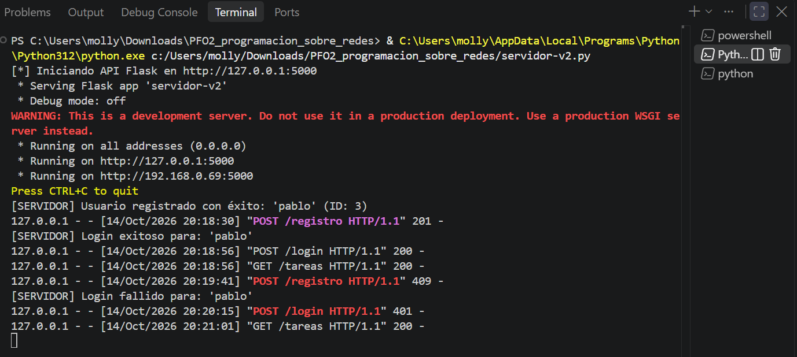
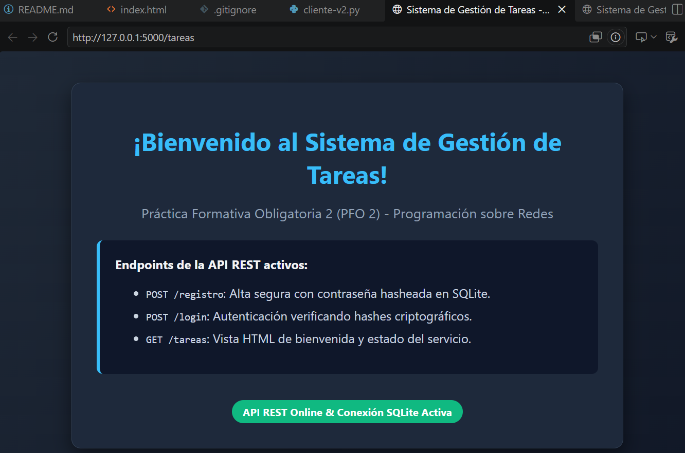

📌 Descripción General
Este proyecto implementa una arquitectura cliente-servidor desacoplada basada en el protocolo HTTP. El servidor expone una API REST para gestionar el ciclo de vida de usuarios (registro y autenticación), garantizando la seguridad mediante funciones hash criptográficas unidireccionales con sal (salting). El sistema incluye un cliente interactivo por consola que consume los endpoints y administra el flujo de acceso seguro hacia la vista de gestión de tareas.
🚀 Endpoints de la API REST
| Método | Endpoint | Descripción | Respuesta Exitosa | Errores Posibles |
|---|---|---|---|---|
| POST | /registro |
Da de alta un usuario persistiendo su contraseña hasheada en SQLite. | 201 Created |
400 Bad Request409 Conflict (Usuario duplicado) |
| POST | /login |
Valida credenciales comparando contra el hash. Acceso seguro sin enumeración. | 200 OK |
400 Bad Request401 Unauthorized (Inválido) |
| GET | /tareas |
Retorna la interfaz web HTML con la bienvenida al sistema y estado del servicio. | 200 OK (text/html) |
500 Internal Error |
🔐 Decisiones Técnicas y Respuestas Teóricas
¿Por qué Hashear Contraseñas?
Almacenar credenciales en texto plano expone la identidad de los usuarios ante eventuales filtraciones.
Se utilizó werkzeug.security para aplicar algoritmos de hash criptográfico unidireccional con sal (salting).
Esto garantiza irreversibilidad matemática y neutraliza ataques mediante Tablas Arcoíris (Rainbow Tables) y ataques de diccionario, ya que contraseñas iguales producen resúmenes alfanuméricos completamente diferentes.
Ventajas de SQLite y Modo WAL
SQLite ofrece un modelo serverless de cero configuración, integrando el motor relacional directamente en el proceso de Python con almacenamiento en un único archivo (tareas.db).
Para maximizar la resiliencia en red y evitar bloqueos por concurrencia, se configuró el modo WAL (Write-Ahead Logging) junto con busy_timeout, permitiendo lecturas concurrentes sin detener las escrituras.
📸 Evidencias de Funcionamiento

1. Servidor Flask en Ejecución
Inicialización de la base de datos SQLite y recepción de solicitudes HTTP con logs en tiempo real.

2. Cliente en Consola y Redirección
Registro de usuario nuevo (201), validación de usuario duplicado (409) y login exitoso con redirección a tareas.

3. Vista HTML de Bienvenida (`GET /tareas`)
Renderizado en el navegador web mostrando el estado activo de la API y de la conexión SQLite.